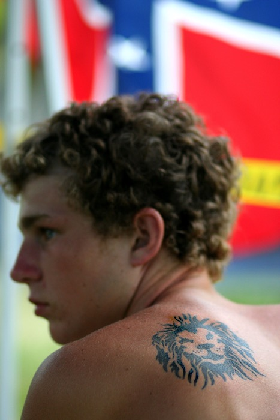

Next Photo
-
Vote
Parts of a Person
This photo is a portrait of a personality, to copy the often used phrase. The portrait can really be broken down into its parts, each representing a portion of this persons personality. Farthest is the confederate flag, not representing racism, but a since of pride and heritage. The caution tape alludes to danger, and the risks of exploiting his freedom. Knowing this person, I can say that he is very free. Second to the front of focus is the person himself, looking onward to what awaits him, ready to tackle his future. He, though, is not the focus element. It is a tattoo on his back. This tattoo represents his namesake and his faith in God. Deriving from it, courage like a Lyon. I am privileged to know this man.
More...
Title: Parts of a Person
Description: This photo is a portrait of a personality, to copy the often used phrase. The portrait can really be broken down into its parts, each representing a portion of this persons personality. Farthest is the confederate flag, not representing racism, but a since of pride and heritage. The caution tape alludes to danger, and the risks of exploiting his freedom. Knowing this person, I can say that he is very free. Second to the front of focus is the person himself, looking onward to what awaits him, ready to tackle his future. He, though, is not the focus element. It is a tattoo on his back. This tattoo represents his namesake and his faith in God. Deriving from it, courage like a Lyon. I am privileged to know this man.
Keywords: portion personality portrait symbolism
Hidden: n
Date added: Sat Oct 27 17:04:37 CDT 2007
Date taken: Thu Jun 28 04:26:29 CDT 2007
Camera: Canon EOS DIGITAL REBEL XT.
Resolution: 2304x3456
Mode: 0
Shutter speed: 784190/65536
Flash: 16
Exposure time: 1/4000
Iso: 400
Metering: 5
Aperture: 111149/65536
Focal length: 85/1
Artist: NathanielGuy Mahieu
Copyright: 2007 NathanielGuy Mahieu
Views: 336